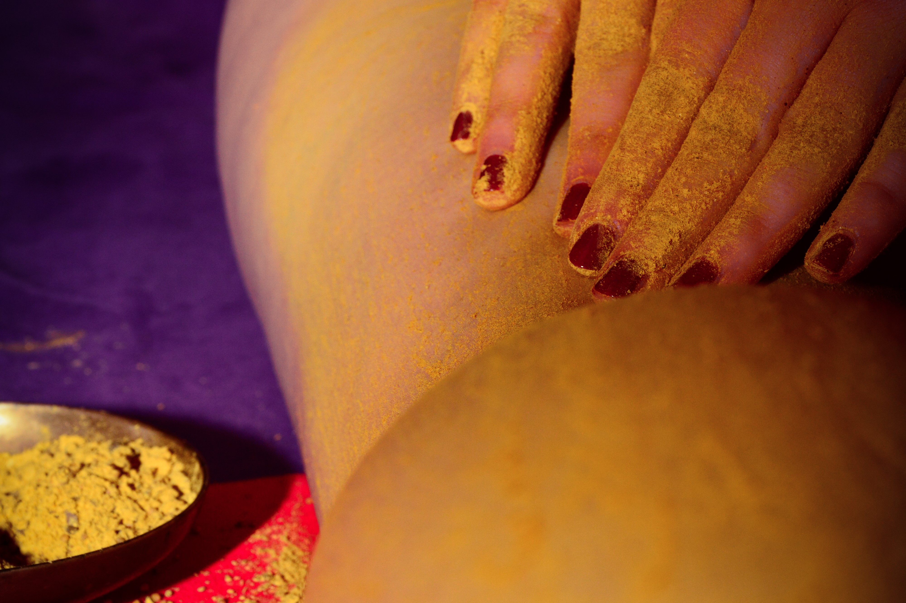
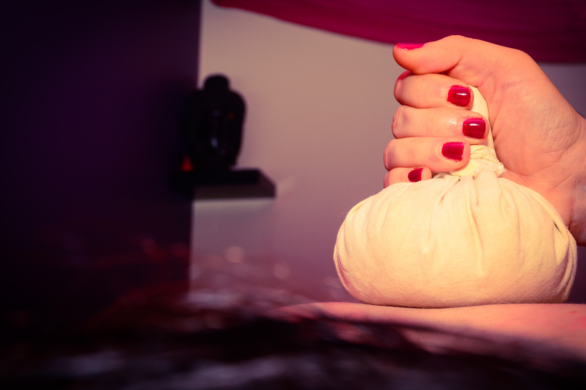
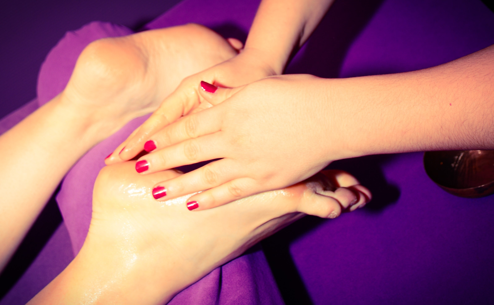
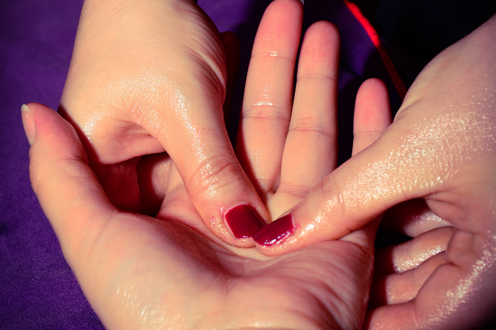
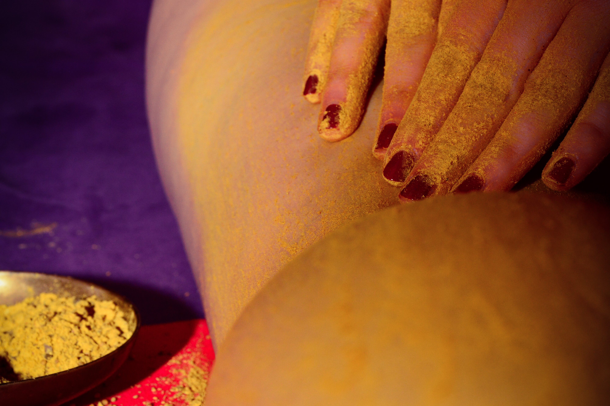
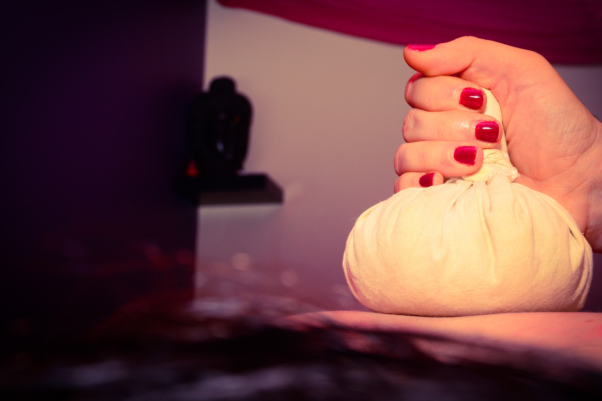
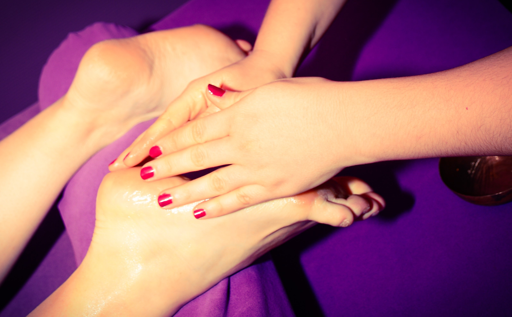
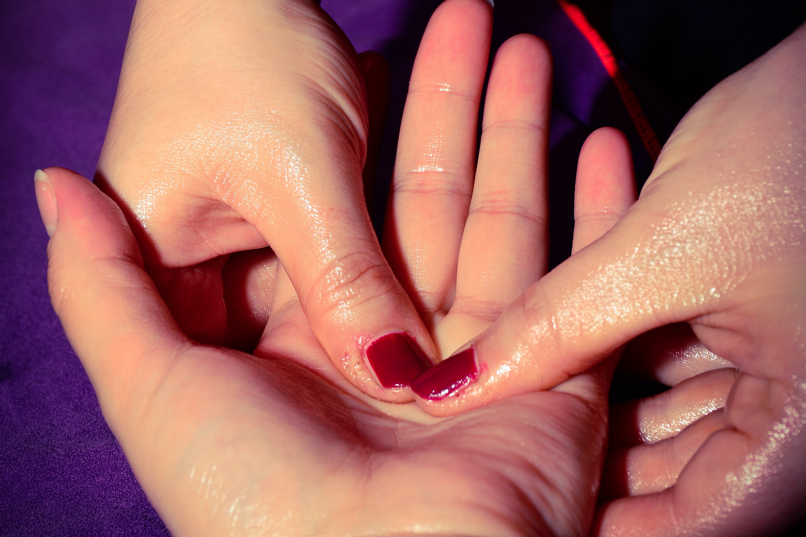

Les massages au cabinet
Formations Massage Abhyanga, Taïmabhynga, Marma Tête et Pieds. Pour les informations consulter la page Formations
Tous les massages sont réalisés sur table de massage (excepté le kalari qui est fait sur futon au sol), dans une pièce chauffée entre 25 et 30 degrès et éclairée avec des lumières tamisées.
L'huile utilisée est l'huile de sésame, qui est chauffée. A la suite du mini bilan que nous faisons ensemble il est possible d'ajouter des huiles essentielles à l'huile de sésame.
Tous les produits utilisés, huiles, épices, plantes, riz, lait, sont issus de l'agriculture biologique.
Il est est préférable d'amener un bas exclusivement pour le massage. Je ne fournis pas de bas jetable pour limiter notre impact sur l'environnement.
Prenons soin de nous de façon durable.
Le massage est contre-indiqué:
- pour les personnes atteintes de cancer (pour l'abhyanga)
- pendant la digestion, attendre environ 2 heures après un repas normal et 3 heures après un repas copieux
- pendant le cycle menstruel (le 1er et 2ème jour des règles)
- pendant les 3 premiers mois de la grossesse
- en état de grippe, sinusite, fièvre
Avant chaque massage nous faisons un petit bilan:digestion, sommeil, émotions. Nous prenons un temps pour échanger sur votre quotidien et trouvons ensemble des solutions que vous pouvez vous appropier.
Après chaque massage, prenez le temps qu'il vous faut pour vous lever.
Il vous sera possible de prendre une douche chaude pour favoriser la circulation et éliminer le surplus d'huile. Mais vous pouvez également garder l'huile sur vous plusieurs heures afin d'hydrater au maximum les tissus.
Vous pourrez également consommer des infusions pour garder la chaleur interne due au massage et faire circuler l'énergie dans le corps.
Il est possible qu'après le massage vous ayez des courbatures, des maux de tête, pensez à bien vous hydrater.
*Comptez donc environ 30-45 min de plus par rapport au temps du massage.
 







| Soin | Description | Indications | Durée | Prix |
|---|---|---|---|---|
| Abhyanga / Amabhyanga | Massage du corps entier à l'huile tiède | Massage relaxant, détoxifiant, réénergisant | 1h00* / 1h30* | 90€ / 120€ |
| Taïmabhyanga | Massage de la femme enceinte | Massage apaisant, relaxant, nourrisant | 1h30* | 120€ |
| Massage Habillé | Massage du corps entier par accupression, vous restez habillé. | Massage relaxant, apaisant, réénergisant | 1h00* | 80€ |
| Massage Shantala | Massage bébé du corps entier à l'huile tiède | Massage enveloppant, tonifiant, nourrisant | 40 min* | 70€ |
| Marmathérapie cranienne | Massage trapèze, visage, crâne à l'huile | Massage détente, anti-stress | 40 min* | 70€ |
| Marmathérapie plantaire | Massage du pied à l'huile | Massage rééquilibrant, relançant la circulation | 40 min* | 70€ |
| Massage au bol Kansu | Massage du pied avec le bol, précédé d'une marmathérapie plantaire | Massage améliorant le métabolisme et favorisant un calme intérieur | 1h00* | 90€ |
| Kalari | Massage du corps entier avec les pieds | Massage améliorant le métabolisme et permettant une détente en profondeur | 1h00* | 90€ |
| Shirodhara | Filet d'huile tiède sur le front, précédé d'une marmathérapie crânienne | Soin favorisant un lâcher prise, un meilleur sommeil, une meilleure concentration | 1h* | 120€ |
| Podikizhi | Massage aux pochons de plantes et épices, suivi d'un sauna/hammam | Soin pour les douleurs articulaires et détoxifiant - Cure de minimum 3 fois 1h30 pour commencer à avoir de bons effets | 1h30* / 3 x 1h30* | 150€ / 400€ |
| Basti | Bain d'huile sur une zone anatomique particulière | Soin pour les douleurs articulaires et nourrisant les articulations | 1h00* | 110€ |
| Navrakizhi | Massage aux pochons de riz au lait | Soin nourrisant le corps et enveloppant | 1h00* | 130€ |
| Udvartanam | Massage à sec à la poudre d'épices du corps entier suivi d'un sauna | Soin amincissant | 1h30* | 130€ |
| Sauna | Bain de vapeur sèche ou humide (avec ou sans huiles essentielles) | Soin permettant d'augmenter l'efficacité d'un massage. | 10-20min à la suite d'un massage corps entier | Possible après chaque massage corps entier |
| Abhyanga - Marma Tête - Shirodhara | Soins à l'huile chaude | Soin favorisant un lâcher prise profond | 2h00 | 200€ |
| Aromatouch | Soins aux huiles essentielles - Dos, crâne, pied | Soin visant à diminuer le stress corporel et réguler les fonction du corps | 40 min | 70€ |
Les massages à domicile
Je me déplace à votre domicile pour des moments détente entre amis, anniversaire enterrement de vie de jeune fille/garçon.
Un minimun de 2 massages est requis pour le déplacement. Le tarif horaire minimal est de 80€. Me contacter pour plus d'informations.
Les massages possibles à domicile sont les Abhyanga, Taïmabhynga, Marma tête et pieds.
Bon cadeau
N'hésitez pas à partager une bulle de détente.